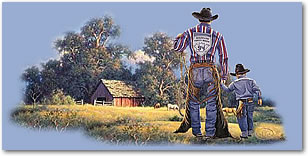
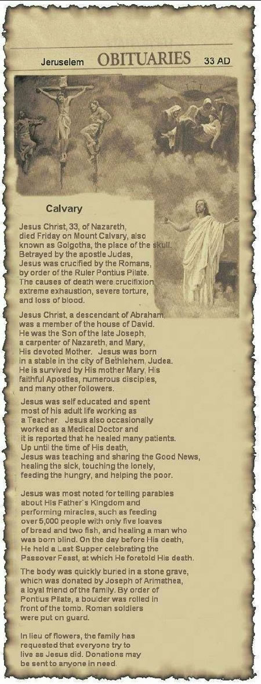

Reflection & encouragement
Thought-provoking meditations to help you through the day.
We are a faith-based insurance broker
Here are a few articles and items we found encouraging. Perhaps they will also encourage you.
Here are a few Bible verses that we found helpful to us and hopefully will encourage you.
If we can help you in any way by connecting you to friends and clients that can encourage and help you in these tough times, please just drop us a note.
I trust in God
“I praise God for what He promised; yes, I praise the Lord for what He has promised. I trust in God, so why should I be afraid? What can mere mortals do to me?”
Psalm 56:10–11“Then at last everyone will say, ‘There truly is a reward for those who live for God; surely there is a God who judges justly here on earth.’”
Psalm 58:11“Be exalted, O God, above the highest heavens. May Your glory shine over all the earth.”
Psalm 57:11“You are my strength; I will wait for You to rescue me, for You, O God, are my fortress. In His unfailing love, my God will stand with me. He will let me look down in triumph on all my enemies.”
Psalm 59:9–10“But God is my helper. The Lord keeps me alive.”
Psalm 54:4“But I will call on God, and the Lord will rescue me. Morning, noon and night I cry out in distress, and the Lord hears my voice.”
Psalm 55:16–17“You keep track of all my sorrows. You have collected all my tears in Your bottle. You have recorded each one in Your book.”
Psalm 56:8“My heart is confident in You, O God; my heart is confident. No wonder I can sing Your praises!”
Psalm 57:7
Write your own conversation between you and God. He hears your voice, He bears all your burdens and He feels all your tears. He understands your fears, He grieves with you and rescues you.
By Tom Holladay
“God’s intent is that through the church, the manifold wisdom of God should be made known.” Ephesians 3:10 (NIV)
God has not meant for anyone to go through life alone. He made us to live in relationship with other people. So when it comes to hearing God’s voice, you need to listen to the people around you. You need a church family and a small group to confirm whether what you sense God directing you to do is true or not. This is the third test question: Are there other people who can confirm what I believe God is saying to me?
If God has genuinely spoken to you, he will confirm it through other mature believers. This idea that we have to do everything on our own is an American idea, not God’s. He wants you to share your idea with others for confirmation and listen to their feedback.
And if you feel resistance to the thought of even asking somebody else about your idea, that should be a huge red flag that the idea did not come from God.
The reason God tells us to get advice is because he wants to save us from a lot of things. As it says in Proverbs 11:9, “The wisdom of the righteous can save you” (GNT).
Advice from other mature believers can save you time wasted doing the wrong thing. It can save you from wasting money. It can save your reputation. It can save you from making mistakes.
One of the main reasons people mess up their lives is that they have no godly friends to give them feedback. That is why it is so important to be in a small group with fellow believers who can hold you accountable and give you advice.
The Bible says, “In the multitude of counselors there is safety” (Proverbs 11:14b KJV). If you are not in a small group, you are skating on thin ice and you don’t know when you might fall through.

It was written by an 8-year-old named Danny Dutton, who lives in Chula Vista, CA. He wrote it for his third grade homework assignment, to ‘explain God.’ I wonder if any of us could have done as well?
Explanation of God
One of God’s main jobs is making people. He makes them to replace the ones that die, so there will be enough people to take care of things on earth. He doesn’t make grownups, just babies. I think because they are smaller and easier to make. That way he doesn’t have to take up his valuable time teaching them to talk and walk. He can just leave that to mothers and fathers.
God’s second most important job is listening to prayers. An awful lot of this goes on, since some people, like preachers and things, pray at times beside bedtime. God doesn’t have time to listen to the radio or TV because of this. Because he hears everything, there must be a terrible lot of noise in his ears, unless he has thought of a way to turn it off.
God sees everything and hears everything and is everywhere which keeps Him pretty busy. So you shouldn’t go wasting his time by going over your mom and dad’s head asking for something they said you couldn’t have.
Atheists are people who don’t believe in God. I don’t think there are any in Chula Vista. At least there aren’t any who come to our church.
Jesus is God’s Son. He used to do all the hard work, like walking on water and performing miracles and trying to teach the people who didn’t want to learn about God. They finally got tired of him preaching to them and they crucified him. But he was good and kind, like his father, and he told his father that they didn’t know what they were doing and to forgive them and God said O.K.
His dad (God) appreciated everything that he had done and all his hard work on earth so he told him he didn’t have to go out on the road anymore. He could stay in heaven. So he did. And now he helps his dad out by listening to prayers and seeing things which are important for God to take care of and which ones he can take care of himself without having to bother God. Like a secretary, only more important.
You can pray anytime you want and they are sure to help you because they got it worked out so one of them is on duty all the time.
You should always go to church on Sunday because it makes God happy, and if there’s anybody you want to make happy, it’s God!
Don’t skip church to do something you think will be more fun like going to the beach. This is wrong. And besides the sun doesn’t come out at the beach until noon anyway.
If you don’t believe in God, besides being an atheist, you will be very lonely, because your parents can’t go everywhere with you, like to camp, but God can. It is good to know He’s around you when you’re scared, in the dark or when you can’t swim and you get thrown into real deep water by big kids.
But… you shouldn’t just always think of what God can do for you. I figure God put me here and he can take me back anytime he pleases.
And… that’s why I believe in God.
I sat, with two friends, in the picture window of a quaint restaurant just off the corner of the town square. The food and the company were both especially good that day.
As we talked, my attention was drawn outside, across the street. There, walking into town, was a man who appeared to be carrying all his worldly goods on his back. He was carrying a well-worn sign that read, ‘I will work for food.’ My heart sank.
I brought him to the attention of my friends and noticed that others around us had stopped eating to focus on him. Heads moved in a mixture of sadness and disbelief.
We continued with our meal, but his image lingered in my mind. We finished our meal and went our separate ways. I had errands to do and quickly set out to accomplish them. I glanced toward the town square, looking somewhat halfheartedly for the strange visitor. I was fearful, knowing that seeing him again would call some response. I drove through town and saw nothing of him. I made some purchases at a store and got back in my car.
Deep within me, the Spirit of God kept speaking to me: ‘Don’t go back to the office until you’ve at least driven once more around the square.’
Then with some hesitancy, I headed back into town. As I turned the square’s third corner, I saw him. He was standing on the steps of the storefront church, going through his sack.
I stopped and looked, feeling both compelled to speak to him, yet wanting to drive on. The empty parking space on the corner seemed to be a sign from God: an invitation to park. I pulled in, got out and approached the town’s newest visitor.
‘Looking for the pastor?’ I asked.
‘Not really,’ he replied, ‘just resting.’
‘Have you eaten today?’
‘Oh, I ate something early this morning.’
‘Would you like to have lunch with me?’
‘Do you have some work I could do for you?’
‘No work,’ I replied. ‘I commute here to work from the city, but I would like to take you to lunch.’
‘Sure,’ he replied with a smile.
As he began to gather his things, I asked some surface questions. ‘Where you headed?’
‘St. Louis.’
‘Where you from?’
‘Oh, all over; mostly Florida.’
‘How long you been walking?’
‘Fourteen years,’ came the reply.
I knew I had met someone unusual. We sat across from each other in the same restaurant I had left earlier. His face was weathered slightly beyond his 38 years. His eyes were dark yet clear, and he spoke with an eloquence and articulation that was startling. He removed his jacket to reveal a bright red T-shirt that said, ‘Jesus is The Never Ending Story.’
Then Daniel’s story began to unfold. He had seen rough times early in life. He’d made some wrong choices and reaped the consequences. Fourteen years earlier, while backpacking across the country, he had stopped on the beach in Daytona. He tried to hire on with some men who were putting up a large tent and some equipment. A concert, he thought.
He was hired, but the tent would not house a concert but revival services, and in those services he saw life more clearly. He gave his life over to God.
‘Nothing’s been the same since,’ he said. ‘I felt the Lord telling me to keep walking, and so I did, some 14 years now.’
‘Ever think of stopping?’ I asked.
‘Oh, once in a while, when it seems to get the best of me. But God has given me this calling. I give out Bibles. That’s what’s in my sack. I work to buy food and Bibles, and I give them out when His Spirit leads.’
I sat amazed. My homeless friend was not homeless. He was on a mission and lived this way by choice. The question burned inside for a moment and then I asked: ‘What’s it like?’
‘What?’
‘To walk into a town carrying all your things on your back and to show your sign?’
‘Oh, it was humiliating at first. People would stare and make comments. Once someone tossed a piece of half-eaten bread and made a gesture that certainly didn’t make me feel welcome. But then it became humbling to realize that God was using me to touch lives and change people’s concepts of other folks like me.’
My concept was changing, too. We finished our dessert and gathered his things. Just outside the door, he paused. He turned to me and said, ‘Come ye blessed of my Father and inherit the kingdom I’ve prepared for you. For when I was hungry you gave me food, when I was thirsty you gave me drink, a stranger and you took me in.’
I felt as if we were on holy ground. ‘Could you use another Bible?’ I asked.
He said he preferred a certain translation. It traveled well and was not too heavy. It was also his personal favorite. ‘I’ve read through it 14 times,’ he said.
‘I’m not sure we’ve got one of those, but let’s stop by our church and see.’ I was able to find my new friend a Bible that would do well, and he seemed very grateful.
‘Where are you headed from here?’ I asked.
‘Well, I found this little map on the back of this amusement park coupon.’
‘Are you hoping to hire on there for a while?’
‘No, I just figure I should go there. I figure someone under that star right there needs a Bible, so that’s where I’m going next.’
He smiled, and the warmth of his spirit radiated the sincerity of his mission. I drove him back to the town square where we’d met two hours earlier, and as we drove, it started raining. We parked and unloaded his things.
‘Would you sign my autograph book?’ he asked. ‘I like to keep messages from folks I meet.’
I wrote in his little book that his commitment to his calling had touched my life. I encouraged him to stay strong. And I left him with a verse of scripture from Jeremiah: ‘I know the plans I have for you,’ declared the Lord, ‘plans to prosper you and not to harm you; plans to give you a future and a hope.’
‘Thanks, man,’ he said. ‘I know we just met and we’re really just strangers, but I love you.’
‘I know,’ I said, ‘I love you, too. The Lord is good!’
‘Yes, He is. How long has it been since someone hugged you?’ I asked.
‘A long time,’ he replied.
And so on the busy street corner in the drizzling rain, my new friend and I embraced, and I felt deep inside that I had been changed. He put his things on his back, smiled his winning smile and said, ‘See you in the New Jerusalem.’
‘I’ll be there!’ was my reply.
He began his journey again. He headed away with his sign dangling from his bedroll and pack of Bibles. He stopped, turned and said, ‘When you see something that makes you think of me, will you pray for me?’
‘You bet,’ I shouted back. ‘God bless.’
‘God bless.’ And that was the last I saw of him.
Late that evening as I left my office, the wind blew strong. The cold front had settled hard upon the town. I bundled up and hurried to my car. As I sat back and reached for the emergency brake, I saw them… a pair of well-worn brown work gloves neatly laid over the length of the handle. I picked them up and thought of my friend and wondered if his hands would stay warm that night without them.
Then I remembered his words: ‘If you see something that makes you think of me, will you pray for me?’
Today his gloves lie on my desk in my office. They help me to see the world and its people in a new way, and they help me remember those two hours with my unique friend and to pray for his ministry. ‘See you in the New Jerusalem,’ he said. Yes, Daniel, I know I will…
I shall pass this way but once. Therefore, any good that I can do or any kindness that I can show, let me do it now, for I shall not pass this way again.
The brand new pastor and his wife, newly assigned to their first ministry, to reopen a church in suburban Brooklyn, arrived in early October excited about their opportunities. When they saw their church, it was very run down and needed much work. They set a goal to have everything done in time to have their first service on Christmas Eve.
They worked hard, repairing pews, plastering walls, painting, etc., and on December 18 were ahead of schedule and just about finished. On December 19 a terrible tempest, a driving rainstorm, hit the area and lasted for two days.
On the 21st, the pastor went over to the church. His heart sank when he saw that the roof had leaked, causing a large area of plaster about 20 feet by 8 feet to fall off the front wall of the sanctuary just behind the pulpit, beginning about head high.
The pastor cleaned up the mess on the floor, and not knowing what else to do but postpone the Christmas Eve service, headed home. On the way he noticed that a local business was having a flea market type sale for charity so he stopped in. One of the items was a beautiful, handmade, ivory coloured, crocheted tablecloth with exquisite work, fine colours and a cross embroidered right in the center. It was just the right size to cover up the hole in the front wall. He bought it and headed back to the church.
By this time it had started to snow. An older woman running from the opposite direction was trying to catch the bus. She missed it. The pastor invited her to wait in the warm church for the next bus 45 minutes later.
She sat in a pew and paid no attention to the pastor while he got a ladder, hangers, etc., to put up the tablecloth as a wall tapestry. The pastor could hardly believe how beautiful it looked and it covered up the entire problem area.
Then he noticed the woman walking down the center aisle. Her face was like a sheet. ‘Pastor,’ she asked, ‘where did you get that tablecloth?’ The pastor explained. The woman asked him to check the lower right corner to see if the initials EBG were crocheted into it there. They were. These were the initials of the woman, and she had made this tablecloth 35 years before, in Austria.
The woman could hardly believe it as the pastor told how he had just gotten the tablecloth. The woman explained that before the war she and her husband were well-to-do people in Austria. When the Nazis came, she was forced to leave. Her husband was going to follow her the next week. He was captured and sent to prison, and she never saw her husband or her home again.
The pastor wanted to give her the tablecloth, but she made the pastor keep it for the church. The pastor insisted on driving her home; that was the least he could do. She lived on the other side of Staten Island and was only in Brooklyn for the day for a housecleaning job.
What a wonderful service they had on Christmas Eve. The church was almost full. The music and the spirit were great. At the end of the service, the pastor and his wife greeted everyone at the door and many said that they would return. One older man, whom the pastor recognized from the neighbourhood, continued to sit in one of the pews and stare, and the pastor wondered why he wasn’t leaving.
The man asked him where he got the tablecloth on the front wall, because it was identical to one that his wife had made years ago when they lived in Austria before the war, and how could there be two tablecloths so much alike?
He told the pastor how the Nazis came, how he forced his wife to flee for her safety and he was supposed to follow her, but he was arrested and put in a prison. He never saw his wife or his home again all the 35 years in between.
The pastor asked him if he would allow him to take him for a little ride. They drove to Staten Island and to the same house where the pastor had taken the woman three days earlier.
He helped the man climb the three flights of stairs to the woman’s apartment, knocked on the door and he saw the greatest Christmas reunion he could ever imagine.
True story, submitted by Pastor Rob Reid. Who says God does not work in mysterious ways…?
I asked the Lord to bless you as I prayed for you today,
to guide you and protect you as you go along your way.
His love is always with you, His promises are true,
and when we give Him all our cares you know He will see us through.
So when the road you’re traveling on seems difficult at best…
Just remember I’m here praying and God will do the rest.
- Wake up! Decide to have a good day. ‘This is the day the Lord hath made; let us rejoice and be glad in it.’ Psalms 118:24
- Dress up! The best way to dress up is to put on a smile. A smile is an inexpensive way to improve your looks. ‘The Lord does not look at the things man looks at. Man looks at outward appearance, but the Lord looks at the heart.’ 1 Samuel 16:7
- Shut up! Say nice things and learn to listen. God gave us two ears and one mouth, so He must have meant for us to do twice as much listening as talking. ‘He who guards his lips guards his soul.’ Proverbs 13:3
- Stand up! …for what you believe in. Stand for something or you will fall for anything. ‘Let us not be weary in doing good; for at the proper time, we will reap a harvest if we do not give up. Therefore, as we have opportunity, let us do good…’ Galatians 6:9–10
- Look up! …to the Lord. ‘I can do everything through Christ who strengthens me.’ Philippians 4:13
- Reach up! …for something higher. ‘Trust in the Lord with all your heart, and lean not unto your own understanding. In all your ways, acknowledge Him, and He will direct your path.’ Proverbs 3:5–6
- Lift up! …your prayers. ‘Do not worry about anything; instead, pray about everything.’ Philippians 4:6
A positive thought
If God had a refrigerator, your picture would be on it. If He had a wallet, your photo would be in it. He sends you flowers every spring, and a sunrise every morning.
Whenever you want to talk, He’ll listen. He could live anywhere in the universe, and He chose your heart. What about the Christmas gift He sent you in Bethlehem; not to mention that Friday at Calvary. Face it, He’s crazy about you.
God answers knee-mail! Wishing you a blessed day!
This is one of the best explanations of why God allows pain and suffering that I have seen.
A man went to a barbershop to have his hair cut and his beard trimmed. As the barber began to work, they began to have a good conversation. They talked about so many things and various subjects.
When they eventually touched on the subject of God, the barber said: ‘I don’t believe that God exists.’
‘Why do you say that?’ asked the customer.
‘Well, you just have to go out in the street to realize that God doesn’t exist. Tell me, if God exists, would there be so many sick people? Would there be abandoned children? If God existed, there would be neither suffering nor pain. I can’t imagine a loving God who would allow all of these things.’
The customer thought for a moment, but didn’t respond because he didn’t want to start an argument. The barber finished his job and the customer left the shop.
Just after he left the barbershop, he saw a man in the street with long, stringy, dirty hair and an untrimmed beard. He looked dirty and unkempt. The customer turned back and entered the barber shop again and he said to the barber: ‘You know what? Barbers do not exist.’
‘How can you say that?’ asked the surprised barber. ‘I am here, and I am a barber. And I just worked on you!’
‘No!’ the customer exclaimed. ‘Barbers don’t exist because if they did, there would be no people with dirty long hair and untrimmed beards, like that man outside.’
‘Ah, but barbers DO exist! That’s what happens when people do not come to me.’
‘Exactly!’ affirmed the customer. ‘That’s the point! God, too, DOES exist! That’s what happens when people do not go to Him and don’t look to Him for help. That’s why there’s so much pain and suffering in the world.’
Be blessed & be a blessing to others!
I was at the corner grocery store buying some early potatoes. I noticed a small boy, delicate of bone and feature, ragged but clean, hungrily appraising a basket of freshly picked green peas.
I paid for my potatoes but was also drawn to the display of fresh green peas. I am a pushover for creamed peas and new potatoes. Pondering the peas, I couldn’t help overhearing the conversation between Mr. Miller (the store owner) and the ragged boy next to me.
“Hello Barry, how are you today?”
“H’lo, Mr. Miller. Fine, thank ya. Jus’ admirin’ them peas. They sure look good.”
“They are good, Barry. How’s your Ma?”
“Fine. Gittin’ stronger alla’ time.”
“Good. Anything I can help you with?”
“No, Sir. Jus’ admirin’ them peas.”
“Would you like to take some home?” asked Mr. Miller.
“No, Sir. Got nuthin’ to pay for ’em with.”
“Well, what have you to trade me for some of those peas?”
“All I got’s my prize marble here.”
“Is that right? Let me see it,” said Miller.
“Here ’tis. She’s a dandy.”
“I can see that. Hmmmmm, only thing is this one is blue and I sort of go for red. Do you have a red one like this at home?” the store owner asked.
“Not zackley but almost.”
“Tell you what. Take this sack of peas home with you and next trip this way let me look at that red marble,” Mr. Miller told the boy.
“Sure will. Thanks Mr. Miller.”
Mrs. Miller, who had been standing nearby, came over to help me. With a smile she said, “There are two other boys like him in our community; all three are in very poor circumstances. Jim just loves to bargain with them for peas, apples, tomatoes, or whatever. When they come back with their red marbles, and they always do, he decides he doesn’t like red after all and he sends them home with a bag of produce for a green marble or an orange one, when they come on their next trip to the store.”
I left the store smiling to myself, impressed with this man. A short time later I moved to Colorado, but I never forgot the story of this man, the boys, and their bartering for marbles.
Several years went by, each more rapid than the previous one. Just recently I had occasion to visit some old friends in that Idaho community and while I was there learned that Mr. Miller had died.
They were having his visitation that evening and knowing my friends wanted to go, I agreed to accompany them. Upon arrival at the mortuary we fell into line to meet the relatives of the deceased and to offer whatever words of comfort we could.
Ahead of us in line were three young men. One was in an army uniform and the other two wore nice haircuts, dark suits and white shirts… all very professional looking. They approached Mrs. Miller, standing composed and smiling by her husband’s casket. Each of the young men hugged her, kissed her on the cheek, spoke briefly with her, and moved on to the casket.
Her misty light blue eyes followed them as, one by one, each young man stopped briefly and placed his own warm hand over the cold pale hand in the casket. Each left the mortuary awkwardly, wiping his eyes.
Our turn came to meet Mrs. Miller. I told her who I was and reminded her of the story from those many years ago and what she had told me about her husband’s bartering for marbles. With her eyes glistening, she took my hand and led me to the casket.
“Those three young men who just left were the boys I told you about. They just told me how they appreciated the things Jim ‘traded’ them. Now, at last, when Jim could not change his mind about colour or size… they came to pay their debt.”
“We’ve never had a great deal of the wealth of this world,” she confided, “but right now, Jim would consider himself the richest man in Idaho.”
With loving gentleness she lifted the lifeless fingers of her deceased husband. Resting underneath were three exquisitely shined red marbles.
The moral: We will not be remembered by our words, but by our kind deeds. Life is not measured by the breaths we take, but by the moments that take our breath away.
Today I wish you a day of ordinary miracles: a fresh pot of coffee you didn’t make yourself… an unexpected phone call from an old friend… green stoplights on your way to work… the fastest line at the grocery store… a good sing-along song on the radio… your keys found right where you left them.

Obituaries · Jerusalem, 33 AD
Calvary
Jesus Christ, 33, of Nazareth, died Friday on Mount Calvary, also known as Golgotha, the place of the skull. Betrayed by the apostle Judas, Jesus was crucified by the Romans, by order of the ruler Pontius Pilate. The causes of death were crucifixion, extreme exhaustion, severe torture, and loss of blood.
Jesus Christ, a descendant of Abraham, was a member of the house of David. He was the Son of the late Joseph, a carpenter of Nazareth, and Mary, His devoted mother. Jesus was born in a stable in the city of Bethlehem, Judea. He is survived by His mother Mary, His faithful Apostles, numerous disciples, and many other followers.
Jesus was self educated and spent most of his adult life working as a Teacher. Jesus also occasionally worked as a Medical Doctor and it is reported that he healed many patients. Up until the time of His death, Jesus was teaching and sharing the Good News, healing the sick, touching the lonely, feeding the hungry, and helping the poor.
Jesus was most noted for telling parables about His Father’s Kingdom and performing miracles, such as feeding over 5,000 people with only five loaves of bread and two fish, and healing a man who was born blind. On the day before His death, He held a Last Supper celebrating the Passover Feast, at which He foretold His death.
The body was quickly buried in a stone grave, which was donated by Joseph of Arimathea, a loyal friend of the family. By order of Pontius Pilate, a boulder was rolled in front of the tomb. Roman soldiers were put on guard.
In lieu of flowers, the family has requested that everyone try to live as Jesus did. Donations may be sent to anyone in need.
Thanks be unto God for His wonderful gift: Jesus Christ, the only begotten Son of God, is the object of our faith; the only faith that saves is faith in Him.
This is the day that the Lord has made; let us rejoice and be glad in it. Have a blessed day.
A young woman went to her mother and told her about her life and how things were so hard for her. She did not know how she was going to make it and wanted to give up. She was tired of fighting and struggling. It seemed as one problem was solved, a new one arose.
Her mother took her to the kitchen. She filled three pots with water and placed each on a high fire. Soon the pots came to boil. In the first she placed carrots, in the second she placed eggs, and in the last she placed ground coffee beans. She let them sit and boil, without saying a word.
In about twenty minutes she turned off the burners. She fished the carrots out and placed them in a bowl. She pulled the eggs out and placed them in a bowl. Then she ladled the coffee out and placed it in a bowl. Turning to her daughter, she asked, ‘Tell me what you see.’
‘Carrots, eggs, and coffee,’ she replied.
Her mother brought her closer and asked her to feel the carrots. She did and noted that they were soft. The mother then asked the daughter to take an egg and break it. After pulling off the shell, she observed the hard boiled egg.
Finally, the mother asked the daughter to sip the coffee. The daughter smiled as she tasted its rich aroma. The daughter then asked, ‘What does it mean, mother?’
Her mother explained that each of these objects had faced the same adversity: boiling water. Each reacted differently. The carrot went in strong, hard, and unrelenting. However, after being subjected to the boiling water, it softened and became weak. The egg had been fragile. Its thin outer shell had protected its liquid interior, but after sitting through the boiling water, its inside became hardened. The ground coffee beans were unique, however. After they were in the boiling water, they had changed the water.
‘Which are you?’ she asked her daughter. ‘When adversity knocks on your door, how do you respond? Are you a carrot, an egg or a coffee bean?’
Think of this: Which am I? Am I the carrot that seems strong, but with pain and adversity do I wilt and become soft and lose my strength?
Am I the egg that starts with a malleable heart, but changes with the heat? Did I have a fluid spirit, but after a death, a breakup, a financial hardship or some other trial, have I become hardened and stiff? Does my shell look the same, but on the inside am I bitter and tough with a stiff spirit and hardened heart?
Or am I like the coffee bean? The bean actually changes the hot water, the very circumstance that brings the pain. When the water gets hot, it releases the fragrance and flavour. If you are like the bean, when things are at their worst, you get better and change the situation around you. When the hour is the darkest and trials are their greatest, do you elevate yourself to another level? How do you handle adversity?
Are you a carrot, an egg or a coffee bean?
May you have enough happiness to make you sweet, enough trials to make you strong, enough sorrow to keep you human and enough hope to make you happy.
The happiest of people don’t necessarily have the best of everything; they just make the most of everything that comes along their way. The brightest future will always be based on a forgotten past; you can’t go forward in life until you let go of your past failures and heartaches.
When you were born, you were crying and everyone around you was smiling. Live your life so at the end, you’re the one who is smiling and everyone around you is crying.
May we all be coffee! Have a great day!
You will enjoy the new insights that Rick Warren has, with his wife having cancer and him having ‘wealth’ from the book sales. This is an absolutely incredible short interview with Rick Warren, Purpose Driven Life author and pastor of Saddleback Church in California.
In the interview by Paul Bradshaw with Rick Warren, Rick said:
People ask me, what is the purpose of life? And I respond: in a nutshell, life is preparation for eternity. We were not made to last forever, and God wants us to be with Him in Heaven.
One day my heart is going to stop, and that will be the end of my body, but not the end of me.
I may live 60 to 100 years on earth, but I am going to spend trillions of years in eternity. This is the warm-up act, the dress rehearsal. God wants us to practice on earth what we will do forever in eternity.
We were made by God and for God, and until you figure that out, life isn’t going to make sense.
Life is a series of problems: either you are in one now, you’re just coming out of one, or you’re getting ready to go into another one.
The reason for this is that God is more interested in your character than your comfort. God is more interested in making your life holy than He is in making your life happy.
We can be reasonably happy here on earth, but that’s not the goal of life. The goal is to grow in character, in Christlikeness.
This past year has been the greatest year of my life but also the toughest, with my wife, Kay, getting cancer.
I used to think that life was hills and valleys: you go through a dark time, then you go to the mountaintop, back and forth. I don’t believe that anymore.
Rather than life being hills and valleys, I believe that it’s kind of like two rails on a railroad track, and at all times you have something good and something bad in your life.
No matter how good things are in your life, there is always something bad that needs to be worked on. And no matter how bad things are in your life, there is always something good you can thank God for.
You can focus on your purposes, or you can focus on your problems. If you focus on your problems, you’re going into self-centeredness: ‘my problem, my issues, my pain.’ But one of the easiest ways to get rid of pain is to get your focus off yourself and onto God and others.
We discovered quickly that in spite of the prayers of hundreds of thousands of people, God was not going to heal Kay or make it easy for her. It has been very difficult for her, and yet God has strengthened her character, given her a ministry of helping other people, given her a testimony, drawn her closer to Him and to people.
You have to learn to deal with both the good and the bad of life. Actually, sometimes learning to deal with the good is harder. For instance, this past year, all of a sudden, when the book sold 15 million copies, it made me instantly very wealthy.
It also brought a lot of notoriety that I had never had to deal with before. I don’t think God gives you money or notoriety for your own ego or for you to live a life of ease. So I began to ask God what He wanted me to do with this money, notoriety and influence. He gave me two different passages that helped me decide what to do, 2 Corinthians 9 and Psalm 72.
- First, in spite of all the money coming in, we would not change our lifestyle one bit. We made no major purchases.
- Second, about midway through last year, I stopped taking a salary from the church.
- Third, we set up foundations to fund an initiative we call The Peace Plan to plant churches, equip leaders, assist the poor, care for the sick, and educate the next generation.
- Fourth, I added up all that the church had paid me in the 24 years since I started the church, and I gave it all back. It was liberating to be able to serve God for free.
We need to ask ourselves: Am I going to live for possessions? Popularity? Am I going to be driven by pressures? Guilt? Bitterness? Materialism? Or am I going to be driven by God’s purposes for my life?
When I get up in the morning, I sit on the side of my bed and say, God, if I don’t get anything else done today, I want to know You more and love You better. God didn’t put me on earth just to fulfill a to-do list. He’s more interested in what I am than what I do. That’s why we’re called human beings, not human doings.
Happy moments, praise God. Difficult moments, seek God. Quiet moments, worship God. Painful moments, trust God. Every moment, thank God!
“Do not be anxious about anything, but in everything, by prayer and petition, with thanksgiving, present your requests to God. And the peace of God, which transcends all understanding, will guard your hearts and your minds in Christ Jesus.” Philippians 4:6–7 (NIV)
I enjoy puttering in the yard, so clipping the rose bushes was enjoyable. I picked up the clippings, discarded them and removed my yard clothes and shoes. A problem happened a few days later as I was puttering in the yard barefooted. I stepped into the rose garden to pick up a few dead clippings I had missed and I felt the sting of the thorn even as it pushed through the bottom of my foot. Limping away, I assumed it would work itself out. No such luck. By that evening the spot was very sore and red, and I could see a small black dot (the thorn) embedded in the sole of my foot.
Time to get the needle out, I thought.
I prodded and picked, only pushing it deeper into my foot. “Ouch! That really hurts,” I thought, as I now could bear no weight upon my heel.
Something so small causing so much pain. The pain was personified with each step I took. I actually had to limp around the rest of the day. I tried several other remedies to rid myself of the painful thorn which had invaded my body, and finally it worked itself out.
I have also had a thorn of anxiety in my life. Have you? Something unwanted invades your life and boom!… the pain begins. Self-help methods didn’t remove the thorn of anxiety. Reading the Bible didn’t help, either (sorry to say). Listening to praise music, or singing praise choruses, weren’t working either. Prayers of friends were appreciated, but didn’t seem to cure my pain. Meditating on a particular scripture was beneficial, but the thorn of anxiety still remained. I was limping around in my daily existence, feeling the pain of the thorn of anxiety. I knew what I had to do, and finally, once and for all, I gave my thorn of anxiety to God. I asked for His peace to fill me and to realize, once again, He was, and IS, in control.
Jesus told us: be anxious for nothing. In this life we are hit with circumstances from right and left that can cause us mild to severe anxiety. No matter the size, the cause, the circumstance, the bleak outlook or the weight we feel on our shoulders, we HAVE to give it to God and allow Him to take care of it.
Amen? Amen.
Marion Smith
One day a teacher asked her students to list the names of the other students in the room on two sheets of paper, leaving a space between each name.
Then she told them to think of the nicest thing they could say about each of their classmates and write it down.
It took the remainder of the class period to finish their assignment, and as the students left the room, each one handed in the papers.
That Saturday, the teacher wrote down the name of each student on a separate sheet of paper, and listed what everyone else had said about that individual.
On Monday she gave each student his or her list. Before long, the entire class was smiling. “Really?” she heard whispered. “I never knew that I meant anything to anyone!” and, “I didn’t know others liked me so much,” were most of the comments.
No one ever mentioned those papers in class again. She never knew if they discussed them after class or with their parents, but it didn’t matter. The exercise had accomplished its purpose. The students were happy with themselves and one another. That group of students moved on.
Several years later, one of the students was killed in Viet Nam and his teacher attended the funeral of that special student. She had never seen a serviceman in a military coffin before. He looked so handsome, so mature.
The church was packed with his friends. One by one those who loved him took a last walk by the coffin. The teacher was the last one to bless the coffin.
As she stood there, one of the soldiers who acted as pallbearer came up to her. “Were you Mark’s math teacher?” he asked. She nodded: “yes.” Then he said: “Mark talked about you a lot.”
After the funeral, most of Mark’s former classmates went together to a luncheon. Mark’s mother and father were there, obviously waiting to speak with his teacher.
“We want to show you something,” his father said, taking a wallet out of his pocket. “They found this on Mark when he was killed. We thought you might recognize it.”
Opening the billfold, he carefully removed two worn pieces of notebook paper that had obviously been taped, folded and refolded many times. The teacher knew without looking that the papers were the ones on which she had listed all the good things each of Mark’s classmates had said about him.
“Thank you so much for doing that,” Mark’s mother said. “As you can see, Mark treasured it.”
All of Mark’s former classmates started to gather around. Charlie smiled rather sheepishly and said, “I still have my list. It’s in the top drawer of my desk at home.”
Chuck’s wife said, “Chuck asked me to put his in our wedding album.”
“I have mine too,” Marilyn said. “It’s in my diary.”
Then Vicki, another classmate, reached into her pocketbook, took out her wallet and showed her worn and frazzled list to the group. “I carry this with me at all times,” Vicki said and without batting an eyelash, she continued: “I think we all saved our lists.”
That’s when the teacher finally sat down and cried. She cried for Mark and for all his friends who would never see him again.
The density of people in society is so thick that we forget that life will end one day. And we don’t know when that one day will be.
So please, tell the people you love and care for that they are special and important. Tell them, before it is too late.
Remember, you reap what you sow. What you put into the lives of others comes back into your own.
May your day be blessed, as special as you are.
Big mud puddles and sunny yellow dandelions
When I look at a patch of dandelions, I see a bunch of weeds that are going to take over my yard. My kids see flowers for Mom and blowing white fluff you can wish on.
When I look at an old drunk and he smiles at me, I see a smelly, dirty person who probably wants money and I look away. My kids see someone smiling at them and they smile back.
When I hear music I love, I know I can’t carry a tune and don’t have much rhythm so I sit self-consciously and listen. My kids feel the beat and move to it. They sing out the words. If they don’t know them, they make up their own.
When I feel wind on my face, I brace myself against it. I feel it messing up my hair and pulling me back when I walk. My kids close their eyes, spread their arms and fly with it, until they fall to the ground laughing.
When I pray, I say thee and thou and grant me this, give me that. My kids say, “Hi God! Thanks for my toys and my friends. Please keep the bad dreams away tonight. Sorry, I don’t want to go to Heaven yet. I would miss my Mommy and Daddy.”
When I see a mud puddle I step around it. I see muddy shoes and dirty carpets. My kids sit in it. They see dams to build, rivers to cross, and worms to play with.
I wonder if we are given kids to teach or to learn from? No wonder God loves the little children! Enjoy the little things in life, for one day you may look back and realize they were the big things.
I wish you big mud puddles and sunny yellow dandelions!
“Life is not measured by the number of breaths we take but by the moments that take our breath away.”
- If you woke up this morning with more health than illness, you are more blessed than the million who won’t survive the week.
- If you have never experienced the danger of battle, the loneliness of imprisonment, the agony of torture or the pangs of starvation, you are ahead of 20 million people around the world.
- If you attend a church meeting without fear of harassment, arrest, torture, or death, you are more blessed than almost three billion people in the world.
- If you have food in your refrigerator, clothes on your back, a roof over your head and a place to sleep, you are richer than 75% of this world.
- If you have money in the bank, in your wallet, and spare change in a dish someplace, you are among the top 8% of the world’s wealthy.
- If your parents are still married and alive, you are very rare, especially in the United States.
- If you hold up your head with a smile on your face and are truly thankful, you are blessed because the majority can, but most do not.
- If you can hold someone’s hand, hug them or even touch them on the shoulder, you are blessed because you can offer God’s healing touch.
- If you can read this message, you are more blessed than over two billion people in the world that cannot read anything at all.
You are so blessed in ways you may never even know.
Once upon a time, two brothers who lived on adjoining farms fell into conflict. It was the first serious rift in 40 years of farming side by side, sharing machinery and trading labour and goods as needed without a hitch. Then the long collaboration fell apart.
It began with a small misunderstanding and it grew into a major difference and finally, it exploded into an exchange of bitter words followed by weeks of silence.
One morning there was a knock on John’s door. He opened it to find a man with a carpenter’s toolbox.
“I’m looking for a few days’ work,” he said. “Perhaps you would have a few small jobs here and there I could help with? Could I help you?”
“Yes,” said the older brother. “I do have a job for you. Look across the creek at that farm. That’s my neighbour. In fact, it’s my younger brother! Last week there was a meadow between us. He recently took his bulldozer to the river levee and now there is a creek between us. Well, he may have done this to spite me, but I’ll do him one better. See that pile of lumber by the barn? I want you to build me a fence, an 8-foot fence, so I won’t need to see his place or his face anymore.”
The carpenter said, “I think I understand the situation. Show me the nails and the post hole digger and I’ll be able to do a job that pleases you.”
The older brother had to go to town, so he helped the carpenter get the materials ready and then he was off for the day.
The carpenter worked hard all that day, measuring, sawing and nailing.
About sunset when the farmer returned, the carpenter had just finished his job. The farmer’s eyes opened wide, his jaw dropped. There was no fence there at all. It was a bridge… a bridge that stretched from one side of the creek to the other! A fine piece of work, handrails and all!
And the neighbour, his younger brother, was coming toward them, his hand outstretched. “You are quite a fellow to build this bridge after all I’ve said and done.”
The two brothers stood at each end of the bridge, and then they met in the middle, taking each other’s hand. They turned to see the carpenter hoist his toolbox onto his shoulder.
“No, wait! Stay a few days. I’ve a lot of other projects for you,” said the older brother.
“I’d love to stay on,” the carpenter said, “but I have many more bridges to build.”
Remember this…
- God won’t ask what kind of car you drove, but He’ll ask how many people you helped get where they needed to go.
- God won’t ask the square footage of your house, but He’ll ask how many people you welcomed into your home.
- God won’t ask about the clothes you had in your closet, but He’ll ask how many you helped to clothe.
- God won’t ask how many friends you had, but He’ll ask how many people to whom you were a friend.
- God won’t ask in what neighbourhood you lived, but He’ll ask how you treated your neighbours.
- God won’t ask about the colour of your skin, but He’ll ask about the content of your character.
- God won’t ask why it took you so long to seek salvation, but He’ll lovingly take you to your mansion in heaven, and not to the gates of Hell.
The pickle jar, as far back as I can remember, sat on the floor beside the dresser in my parents’ bedroom. When he got ready for bed, Dad would empty his pockets and toss his coins into the jar.
As a small boy I was always fascinated at the sounds the coins made as they were dropped into the jar. They landed with a merry jingle when the jar was almost empty. Then the tones gradually muted to a dull thud as the jar was filled.
I used to squat on the floor in front of the jar and admire the copper and silver circles that glinted like a pirate’s treasure when the sun poured through the bedroom window. When the jar was filled, Dad would sit at the kitchen table and roll the coins before taking them to the bank.
Taking the coins to the bank was always a big production. Stacked neatly in a small cardboard box, the coins were placed between Dad and me on the seat of his old truck.
Each and every time, as we drove to the bank, Dad would look at me hopefully. “Those coins are going to keep you out of the textile mill, son. You’re going to do better than me. This old mill town’s not going to hold you back.”
Also, each and every time, as he slid the box of rolled coins across the counter at the bank toward the cashier, he would grin proudly. “These are for my son’s college fund. He’ll never work at the mill all his life like me.”
We would always celebrate each deposit by stopping for an ice cream cone. I always got chocolate. Dad always got vanilla. When the clerk at the ice cream parlour handed Dad his change, he would show me the few coins nestled in his palm. “When we get home, we’ll start filling the jar again.” He always let me drop the first coins into the empty jar. As they rattled around with a brief, happy jingle, we grinned at each other. “You’ll get to college on pennies, nickels, dimes and quarters,” he said. “But you’ll get there. I’ll see to that.”
The years passed, and I finished college and took a job in another town. Once, while visiting my parents, I used the phone in their bedroom, and noticed that the pickle jar was gone. It had served its purpose and had been removed.
A lump rose in my throat as I stared at the spot beside the dresser where the jar had always stood. My dad was a man of few words, and never lectured me on the values of determination, perseverance, and faith.
The pickle jar had taught me all these virtues far more eloquently than the most flowery of words could have done. When I married, I told my wife Susan about the significant part the lowly pickle jar had played in my life as a boy. In my mind, it defined, more than anything else, how much my dad had loved me.
No matter how rough things got at home, Dad continued to doggedly drop his coins into the jar. Even the summer when Dad got laid off from the mill, and Mama had to serve dried beans several times a week, not a single dime was taken from the jar.
To the contrary, as Dad looked across the table at me, pouring catsup over my beans to make them more palatable, he became more determined than ever to make a way out for me. “When you finish college, son,” he told me, his eyes glistening, “you’ll never have to eat beans again, unless you want to.”
The first Christmas after our daughter Jessica was born, we spent the holiday with my parents. After dinner, Mom and Dad sat next to each other on the sofa, taking turns cuddling their first grandchild. Jessica began to whimper softly, and Susan took her from Dad’s arms.
“She probably needs to be changed,” she said, carrying the baby into my parents’ bedroom to diaper her. When Susan came back into the living room, there was a strange mist in her eyes.
She handed Jessica back to Dad before taking my hand and leading me into the room. “Look,” she said softly, her eyes directing me to a spot on the floor beside the dresser. To my amazement, there, as if it had never been removed, stood the old pickle jar, the bottom already covered with coins. I walked over to the pickle jar, dug down into my pocket, and pulled out a fistful of coins. With a gamut of emotions choking me, I dropped the coins into the jar. I looked up and saw that Dad, carrying Jessica, had slipped quietly into the room. Our eyes locked, and I knew he was feeling the same emotions I felt. Neither one of us could speak.
This truly touched my heart. I know it has yours as well. Sometimes we are so busy adding up our troubles that we forget to count our blessings.
Never underestimate the power of your actions. With one small gesture you can change a person’s life, for better or for worse.
God puts us all in each other’s lives to impact one another in some way. Look for God in others.
“The best and most beautiful things cannot be seen or touched; they must be felt with the heart.” Helen Keller
Dario’s thoughts and comments
The Scriptures have great lessons for life. Here are a few thoughts and comments from everyday living from our friend Dario.
Dario is a Toronto businessman who has some interesting faith thoughts, to make us think, perhaps in a different way, on various subjects. He is a member of CBMC, a great organization for business leaders.

To have them emailed to you each day, let J. D. know and he will pass it on to Dario.
Take a moment for yourself
Short videos and messages of hope from other sites.
Going through a tough time?
If we can help you in any way by connecting you to friends and clients who can encourage and help you, please just drop us a note.
- Toll free 1-800-917-7283
- Local 905-764-7868
- Fax 905-764-9618
- Mon–Thu 9:00–4:00, Fri 9:00–3:00